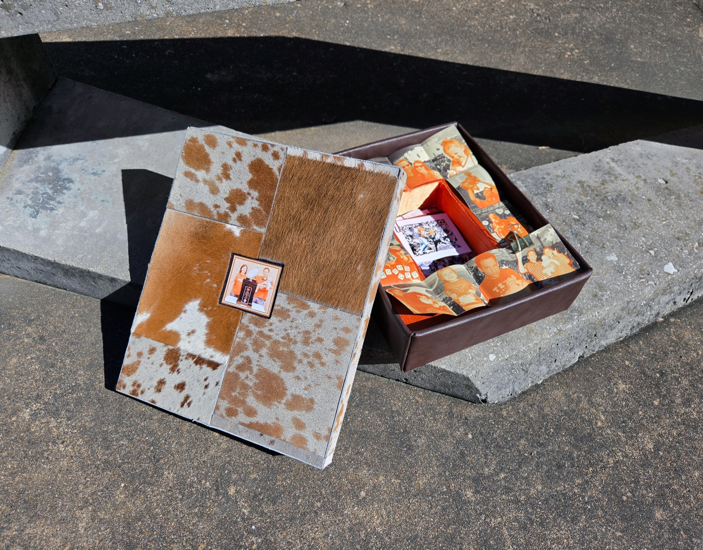
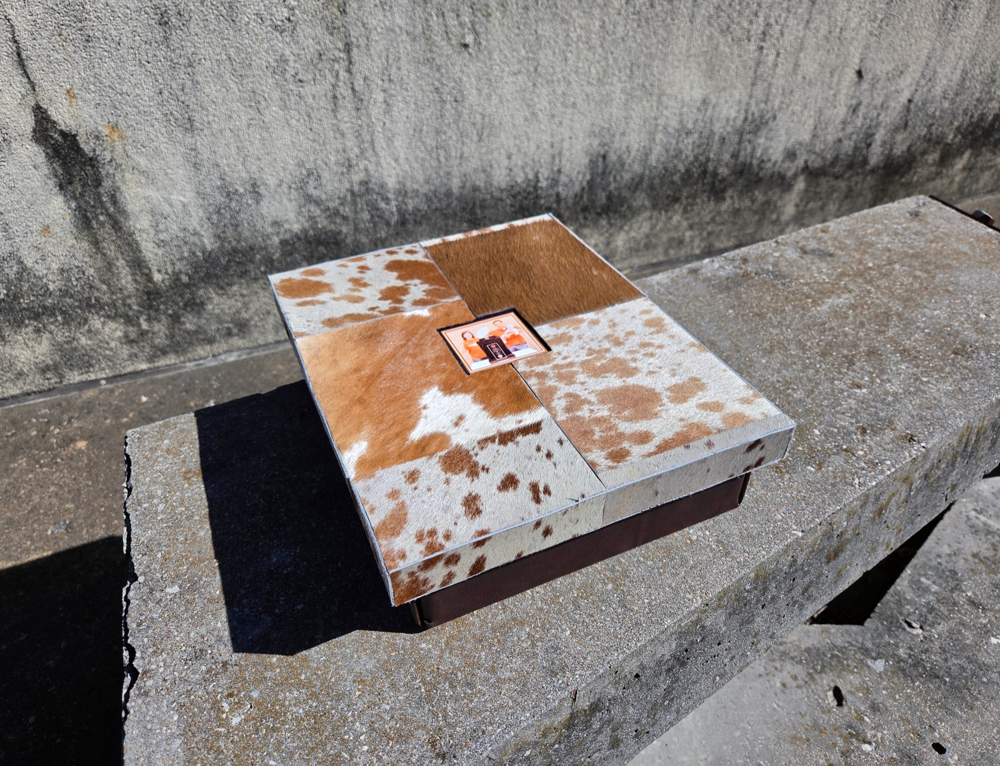
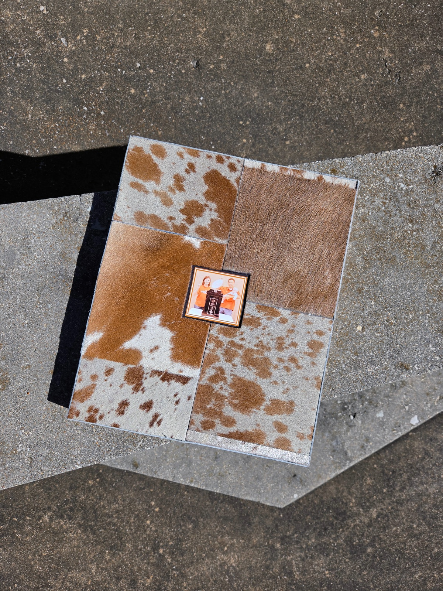
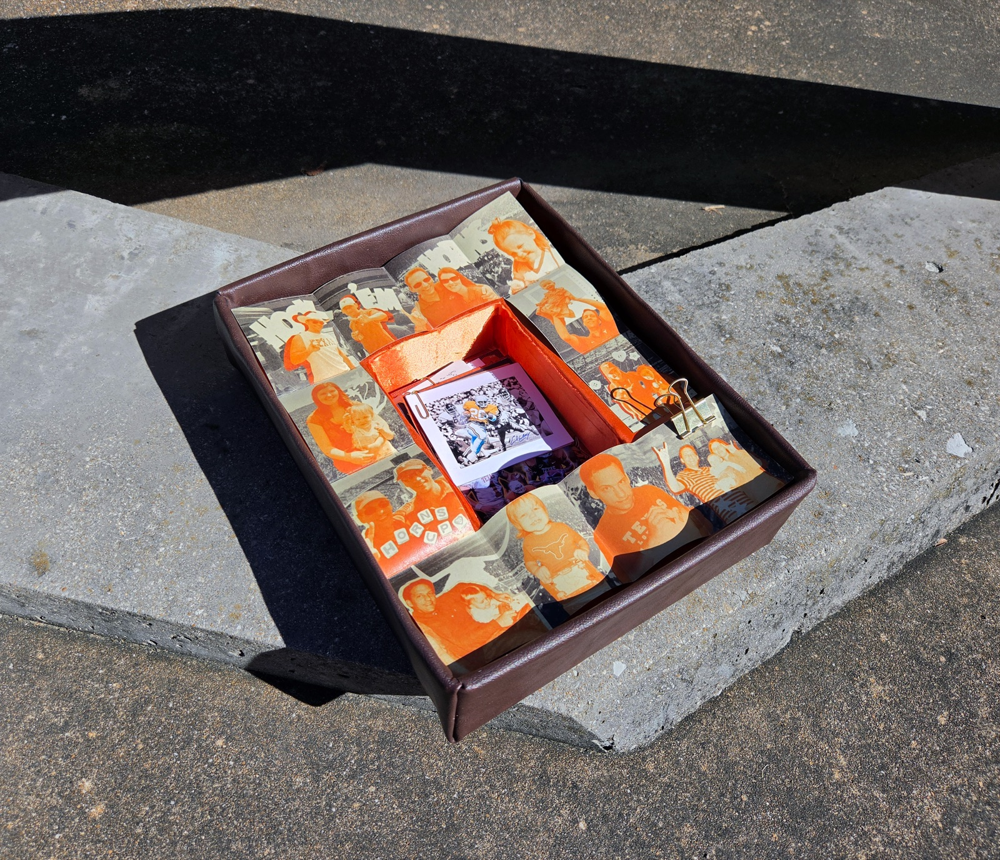
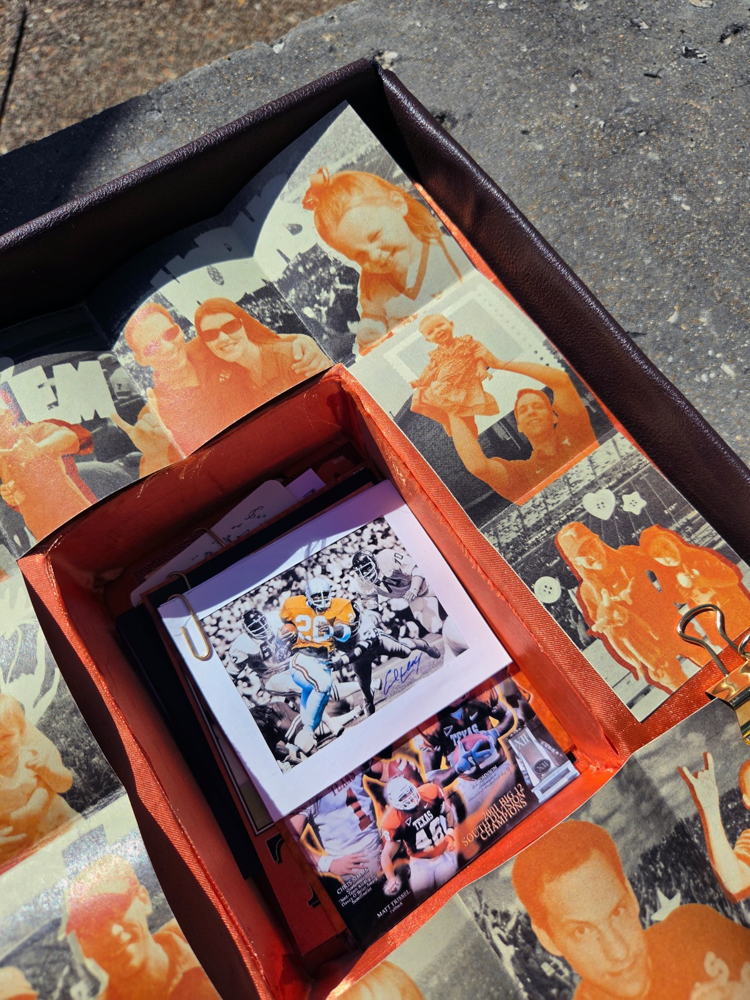
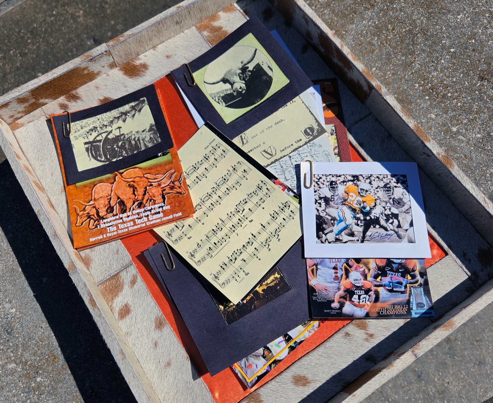

Burnt Orange Saturdays
- Book Arts
- Material Study
- Archival Research
For as long as I can remember, Saturdays have been game days. No matter which house we were living in or what had happened during the week before, my family gathered around the television to watch Texas Longhorns football every fall weekend.
Burnt Orange Saturdays is a shoebox-sized container that holds this ritual as an object. Lined with cow fur, leather, and burnt orange satin, it opens into two chambers that can be explored in either order, allowing the sequence of discovery to subtly change how the story is experienced.
Concept
Over eighteen years, my family moved through eight houses. Through all of that change, Texas Longhorns football remained a constant, a source of pride, excitement, and love that gave our family something to return to. I wanted the piece to hold both sides of that experience: the vibrant energy of the fan experience and the quieter story of my life unfolding around the football team.
The box became a way to make that memory physical. Its two chambers separate the personal story of my family from the larger culture and traditions surrounding Longhorn football, while allowing the two to be encountered in either order. Rather than simply presenting photographs and memorabilia, the piece asks the viewer to open, handle, unfold, and piece together the story themselves.




The Book
The outer chamber contains a continuous unfolding book that literally traces my life around Longhorn football. One side combines sequential images from my childhood with photographs of games and other family events, drawn from my parents' albums. Burnt orange brings the figures forward and emphasizes the connection between family members across different moments in time.
The inverse side shows photographs of each house I have lived in alongside maps of their towns. This side remains visible while the book unfolds, keeping the history of moving present in the viewer's peripheral vision. As one side tells the story of continuity, the other records the change surrounding it, allowing both to unfold simultaneously.
The Ephemera
The inner chamber contains ephemera sourced from internet archives and Longhorn traditions, creating a collection that suggests how someone learns to participate in the culture of being a Longhorn. Fight song sheet music, team legends, photographs of the mascot, game program covers, and more build a visual record of the traditions surrounding the team.
Each piece is printed on a different textured paper selected according to its content, giving the collection an aged and delicate quality. Together, the varied materials make the ephemera feel found rather than produced, like fragments gathered over time and pulled from a family drawer. Paired with the personal story in the outer chamber, they place my family's ritual within the larger tradition that made those Saturdays meaningful.
